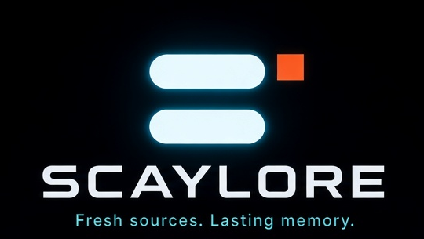

Communicator · chatty / wave
Echo
Hand already up. Three bubbles in the air. Echo catches the sentence that would otherwise vanish and walks it into the system while it is still alive.


SCAYLORE is Scayar’s brand home for a simple promise: keep the sources fresh, and keep the memory lasting. This page is identity, not a product demo — there is no app to install in this repository yet.
Hand already up. Three bubbles in the air. Echo catches the sentence that would otherwise vanish and walks it into the system while it is still alive.

Both hands on the stack. Shelf does not chase. Shelf orders — layers you can still find next month.

Eyes closed. A cube holding the two-bar mark. Lore is the living lore — the quiet middle everything else is meant to reach.

Magnifying glass, wide eyes. Scout finds and checks. Fresh is not the same as true.

A wink and a chain. Knot connects sources, memory, and people — the click that says this belongs with that.
Brand files live in
the SCAYLORE repository.
The mark, lockup, and portraits are crops of the hero. Run
python3 scripts/check-brand.py to verify them.